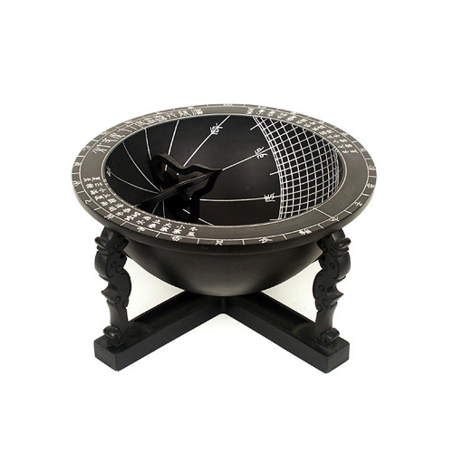

앙부일구
댓글
앙카 이 앙칼진 것
앙카댄스
앙부일구 장영실 해시계에 태양 엉덩에 쪽에 너어서 시계는 12시 라고하고 장영실은 개좋아함 앙부일구 태양열 ㅈㄴ큼
16세기 중갑옷 말고 해시계
최일구
이걸 갑자기 왜 올림?
한국사 준비하나봄
씹덕용어중에 앙다일뷰라는게 있음
앙다문일자뷰지
로리캐릭 성칭찬하는용도
그걸 이용한 언어유희
앙하고부푼일자구체
해 으응
앙다문
부인의
일자
구멍
앙
앙다일뷰 오늘 배우고 감동받은 듯
앙 다문 일본
나 학창시절엔 자격루는 외워도 앙부일구는 못 외워서 주관식에 네글자로 저거 맞추라고 하면 오답률 50퍼센트 넘어갔는데
와 지리네 앙부일구는 ㅇㅈ이지
중갑옷은 어디갔냐
식객민우 ㅋㅋㅋㅋㅋ
16세기 중갑옷 ㅋㅋㅋㅋㅋ
양부일구 아님?
앙카볼트